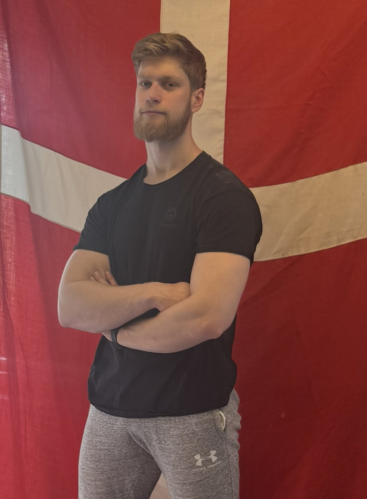

Om Entropi
Entropi Coaching er bygget på en simpel overbevisning: atleter der forstår deres træning præsterer bedre end dem der bare følger en plan.

Marc Schlichting
Jeg er 27 år, bor i Roskilde og har konkurreret i styrkeløft siden jeg var 16. I 2021 tog jeg DM-guld i bænkpres (junior), og i 2025 coachede jeg en atlet til EM-guld i dødløft.
Til daglig underviser jeg i matematik og naturfag. Den analytiske tænkning fra klasseværelset er den samme jeg bringer ind i coachingen: nedbryd problemet, find mønstret, byg løsningen op systematisk.
Jeg har coachet styrkeløftere i over 8 år. Nogen forbereder deres første stævne, andre konkurrerer internationalt. Standarden er den samme for alle: teknisk klarhed, datadrevet programmering og en ærlig, procesorienteret tilgang.
Entropi handler om at finde struktur i kompleksitet. Styrkeløft ser simpelt ud udefra, men under overfladen er der teknik, periodisering, psykologi, restitution og konkurrencestrategi der skal spille sammen. Det er den kompleksitet jeg trives med.
Tidslinje
Min vej ind i coaching startede med min egen nysgerrighed. Jeg ville ikke bare løfte tungt. Jeg ville forstå hvorfor noget virkede, og hvorfor noget andet ikke gjorde. Den nysgerrighed driver stadig mit arbejde.
Tilgangen
Al programmering hos Entropi er baseret på data. RPE-trends, volumenmønstre, teknisk feedback fra videoanalyse og konkurrencestatistik indgår alle som grundlag for beslutninger. Ikke fordi tal erstatter erfaring, men fordi de giver erfaringen et bedre fundament.
Jeg bruger Google Sheets som platform, med ugentlige check-ins og løbende kontakt imellem. Videoanalyse af squat, bænkpres og dødløft er en fast del af processen. Forsøgsstrategier til stævner bygges på præstationsdata, ikke mavefornemmelser.
Min baggrund i undervisning betyder at forklaring er en kernedel af arbejdet. Atleter der forstår hvorfor de træner som de gør, træffer bedre beslutninger på egen hånd, og det er målet.
Evidens og metode som fundament, men aldrig på bekostning af den individuelle atlet. Programmet er et redskab, ikke en facitliste.
Principper
Jeg holder alle atleter til den samme standard. Ikke den samme plan, men den samme standard for kvalitet, ærlighed og proces.